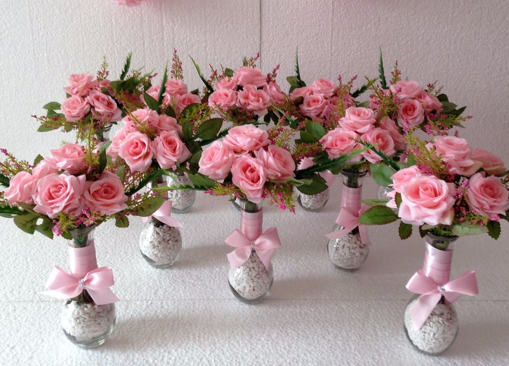
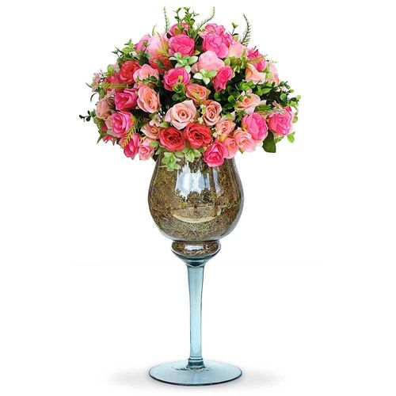
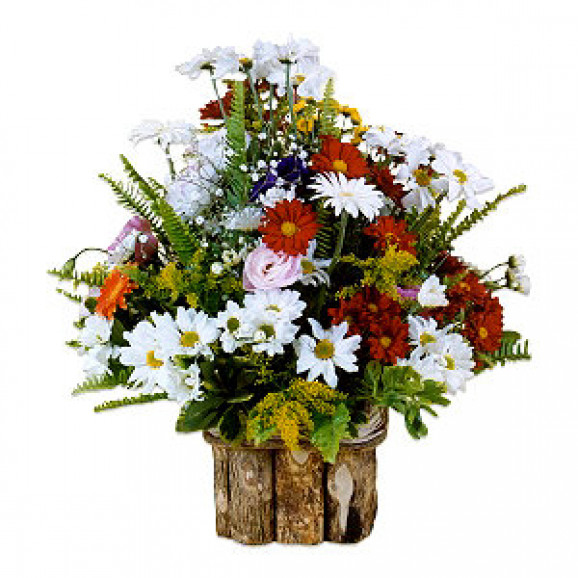
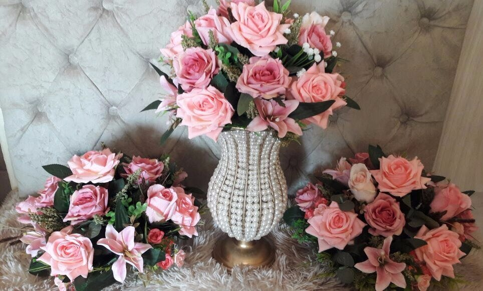
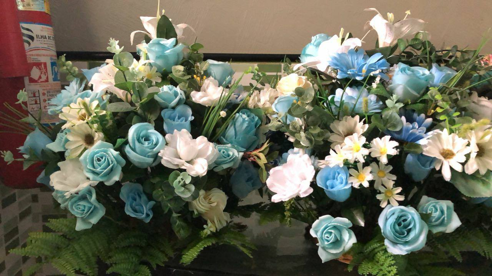

Portfolio
Veja abaixo alguns exemplos de arranjos já entregues
-
 Conjunto de arranjos de mesa com rosas -
 Arranjo de rosas em vaso de vidro -
 Arranjo com vaso de madeira -
 Kit com 1 arranjo em vaso e dois sem vaso -
 Coroas de flores